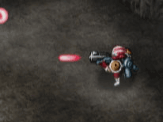

Hay tres tipos diferentes de armas que se pueden equipar por Alex. El jugador puede cambiar entre los tres como quiera.

LA PISTOLA
Un arma clásico que emite proyectiles para atacar a los enemigos.
EL MISIL BUSCADOR
Un proyectil que busca y destruye a los enemigos.
LA GRENADA
Aunque no hay muchas de estas armas, es una manera poderosa de matar a los enemigos en una zona más grande.
Hay cinco niveles de poder. Cada Generador de Pistolas GP (Gun Power) obtenida incrementa el nivel por uno. El daño recibido disminuye el nivel por uno.
●BOMBA DETONADOR
Una Bomba Detonador que puede dañar a los enemigos por una zona más amplia que la pistola también está disponible a Alex. El tamaño de la zona de detonación depende en el Arma Principal equipado. La Bomba Detonador se puede obtener en el mapa.